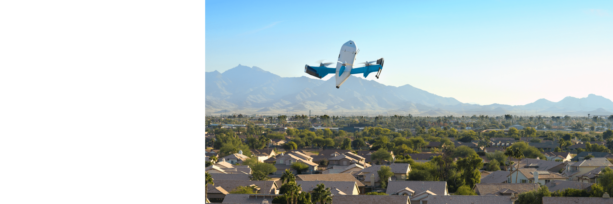
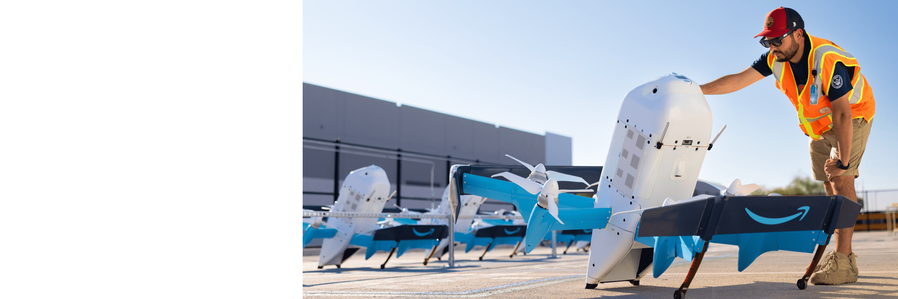

What's faster than fast? Your next drone delivery.
Drone delivery near you


Ultra-fast
Everyday essentials, last-minute gifts, and midday snacks all delivered ultra-fast. Delivery has never been faster.

Safe
Safety is our top priority. Our drones use industry-leading technology to detect and avoid obstacles, ensuring safe navigation to and from destinations. This protects people, pets, and property. Our operations are authorized by the Federal Aviation Administration (FAA).

Convenient
Shopping is reimagined with drone delivery. Shop from tens-of-thousands of items, delivered faster than ever before. Skip the trip with ultra-fast drone delivery.
What is Prime Air?
Your safety and privacy are our priority
Our multi-layered safety and security systems are built using proven aerospace design methods. From safely delivering everyday items to protecting your personal information, our ultra-fast drone delivery service is designed with your needs in mind.
Your delivery, your way
Customers can select their preferred delivery point from a range of pre-identified locations, including front or backyards. Convenient and secure, our system ensures that your package arrives safely at your selected location. Simply choose your delivery point, ensure the delivery area is clear, and we'll handle the rest.

Safety in the air and on the ground
Safety informs every design decision at Prime Air. Our drones use industry-leading technology to detect unexpected situations and navigate safely. The drone is designed to not complete a delivery if it detects obstacles such as people, pets, and property. Our operations are authorized by the FAA.

Privacy and security at every step
Our drones feature detect-and-avoid technology to navigate, sense and avoid obstacles, deliver packages, and, if conditions require it, safely land. If an issue is detected and recording occurs at the delivery location, our drones detect people without identifying them.

All the things you're curious about
Who is eligible for drone delivery?
Drone delivery is available to eligible customers in select cities. We are opening new cities this year, check back soon to learn more.
When is drone delivery available?
Drone delivery is available during daylight hours and favorable weather conditions. We do not offer drone delivery at night, during heavy winds, or unfavorable weather.
Can I shop after drone delivery service hours?
Yes, you can shop outside of service hours for when drone delivery service reopens. Items that meet the eligibility criteria per order will be delivered by drone.
Which items are available for drone delivery?
Our drones deliver packages up to five pounds. Heavy or large items that exceed this weight limit are not eligible. If an item is out of stock or doesn't meet the eligibility requirements, it is unavailable for drone delivery.
Do I have to be home for drone delivery?
You don't need to be present at the time of delivery. Please ensure that people, pets, vehicles, and objects taller than 5 feet (including plants) are at least 10 feet away from the selected delivery point.
How do I select my drone delivery point?
Single Family Homes: When placing your first drone delivery order, you'll be prompted to select your preferred delivery area. Once you confirm your selection, this will be your default delivery point for drone delivery. If you need to change it, you can do so by clicking the 'Review delivery area' link during checkout or from the Your Addresses page. You can also click 'Report an issue' to contact customer support, and a Customer Service Associate will assist you in finding an alternative delivery point.
Multi-Unit Properties: You will see delivery areas available on your property during the drone delivery checkout process.
Is Amazon using electric-powered drones?
Yes, our drones are fully electric and produce zero exhaust emissions. Transitioning to renewable energy is one of the most impactful ways to lower carbon emissions. As part of our commitment to reach net-zero carbon by 2040, Amazon is on a path to purchase enough renewable energy to match 100% of the non-renewable electricity consumed by our global operations by 2025.
More questions?
Check out our full list of drone delivery FAQs.
Learn more about our drone delivery operations.